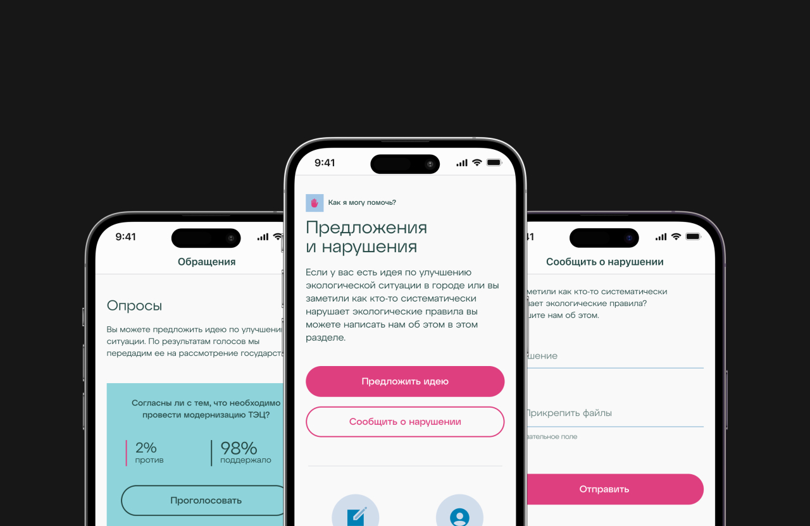

Редизайн цифровых продуктов AirVision

Сделано
CJM, UX Research, Concept, Prototype, UI Design
Заказчик
https://www.airvision.kz
Цель проекта. Донести до пользователей ценность: пользователи должны понимать, что могут не только мониторить качество воздуха, но и влиять на него.
Задача. Произвести обновление дизайна сайта и приложений с упором на обновленное позиционирование проекта.
Ситуация. Общественный независимый фонд AirVision.kz занимается вопросами мониторинга и улучшения качества воздуха в городе Алматы. Официальный сайт Фонда предоставляет заинтересованным лицам данные с замеров о качестве воздуха на основе показателей различных датчиков, установленных по городу и стране; занимается экологическим информированием, вопросами газификации частного массива; принимает и обрабатывает заявки, жалобы и предложения от горожан.
Фонд развивает собственные приложения AirVision на платформах iOS и Android.
Ближайшая задача компании. Фонд хочет обновить дизайн текущих продуктов для улучшения пользовательского опыта, привлечения новой аудитории, удержания и вовлечения текущей аудитории. Кроме того есть необходимость в дальнейшем развитии проекта — Фонд хочет сделать акцент на том, что каждый житель важен и способен повлиять на ухудшающуюся ситуацию с воздухом. Для этого Фонд вводит в свои продукты возможность делиться данными о нарушениях и нарушителях с помощью фото- и видеофиксации. Также в рамках мотивирования и увеличения вовлеченности вводятся элементы геймификации и системы поощрений, а также каталог с собственной продукцией, доступный для приобретения пользователями продукта.
Разработкой, версткой и продвижением продуктов будут заниматься сотрудники Фонда. Задача Исполнителя — провести анализ текущих продуктов и предоставить новый дизайн сайта в вариациях для смартфонов, планшета и десктопа; а также новый дизайн приложений. Подготовить оформление для размещения в магазины приложений four и GooglePlay; предложить варианты виджетов для смартфона и умных часов; заложить основы для возможного дальнейшего развития проекта, подготовить документацию по использованию, созданных в рамках проекта, компонентов дизайна.
Рассматриваем сайт и приложение, как единый продукт. То, что человек может получить на сайте, он получает в таком же виде и объеме и в приложении. Только удобнее. Плюсы подхода — единый дизайн-код, четкая ассоциация с брендом, отсутствие необходимости переучиваться при пользовании различными составляющими продукта.
Продукт намерен стать постоянным спутником пользователя: он может быть в его кармане среди других приложений, но лучше если будет на его запястье и сигнализировать о текущей ситуации в городе.
Как сейчас. Пользователь пользуется только главной страницей — согласно текущей статистике, он редко уходит дальше.
Как хотим. Увеличить количество ежедневного и более осознанного пользования продуктом, формирование сообщества неравнодушных людей.
Хотим из пассивных зрителей превратить их в активных пользователей. Для этого мы должны вовлечь пользователя. Для вовлечения применяем инструменты геймификации во все составляющие продукта: подача обращения, отслеживание показателей датчиков, участие в жизни сообщества.
Stories. Использование формата Stories для освещения последних новостей и актуальных ценностей, известный формат, доказано увеличивает вовлеченность пользователей. Использование интерактива внутри Stories: голосовалки, вопросы к аудитории.
Social Share. Люди любят делиться красивым, используем это тоже: реализуем нативно возможность делиться красивыми плашками с индикаторами, также при открытии камеры автоматически открываем виджет с индикаторами, таким образом помимо фото смога, человек сразу видит и значение качества воздуха.
Achievements. Награждаем активность пользователя в продукте — даем медальки и баллы за те или иные действия, первая за регистрацию, дается автоматом для подогрева азарта собрать все.
Систему ачивок удобно использовать при коллаборации с партнерами. Например, если наш пользователь зарегистрирован и в ecosen, мы можем подтянуть его данные и наградить медалькой за сданные килограммы вторсырья. При возможности получать данные по километражу от городского транспорта, можем награждать и за это. Можно придумать любые дополнительные медальки в случае, если будут коллаборации и с другими продуктами — спортивные, по правильному питанию, по zero waste и тд.
Медали, а с ними и баллы можно получать и за оффлайн активности — за деятельность в рамках программы амбассадоров, например.
По задумке, баллы копятся до того значения, после которого их можно обменять в магазине на что-то из мерчендайза.
Store. Таким образом, мы переходим к каталогу товаров, который доступен для приобретения мерчендайза за баллы или живые деньги.
Товары можно ограничить искуственно для привлечения внимания — например, какие-то из них сделать доступным только для амбассадоров.
CO²-след. Калькулятор эко-следа. За отсутствием возможности автоматизировать процесс, пользователь может в простой форме посмотреть тот эко-след, который оставит, если выберет тот или иной вид передвижения.
Делаем в игровой форме, награждаем за любознательность, оставляем возможность поделиться результатом.
Обращения. Работаем в связке с Open Almaty, обмениваемся данными: при создании заявки, отправляем ее партнерам, получаем от них статусы, отображаем пользователю.
При развитии проекта, можно попробовать задействовать и сообщество целиком — предложенную идею не отправлять сразу в Open Almaty, а назначить «цену», то количество голосов после которой, она автоматически отправиться на рассмотрение в акимат.
Друзья. Предлагаем также звать друзей через уникальные ссылки, которые будет формировать продукт. По результатам награждать обоих — того, кто позвал и того, кто пришел по ссылке.
Донаты. Идея благотворительности постепенно входит в обиход. В каждом приложении появилась возможность оставить чаевые или пожертвовать суммы в пользу того или иного. Добавить такую возможность за то, чем мы все дышим, кажется, вполне логичным.
Договорились использовать Каспи, как основную площадку сбора. Будет здорово, если сможем получать от них инфо по состоянию счета и отображать в нашем продукте — сколько хотим собрать, сколько собрали.
В ином случае, можно сделать это в ручном режиме и обновлять данные раз в период.
Виджеты. Для закрытия основной потребности — смотреть индикаторы качества — можно сделать простые виджеты, использовать их как на смартфоне, так и на часах.
Уведомления. Можно увеличить область применения уведомлений. Сейчас это раз в день в 10:25 приходит уведомление о качестве воздуха. А можно с разрешения пользователя слать уведомление по пороговому значению (ниже 100 AQI, например), по времени (каждый час) или по появлению обновлений (новости, опросы, идеи, например).
Цвета. Чуть расширили собственные цвета из брендбука.
В процессе дизайна пришла идея добавить концепции и к выбору цветового решения. В основе всегда был синий, как символ воздуха. Добавили к нему оттенки серого для обозначения смога и зеленый — для земли.
Если листать главную страницу сверху вниз, получается, что мы спускаемся от синих воздушных цветов к зеленым земляным. Для визуального отображения концепта и локальной принадлежности фонда добавили внизу коллаж с горами Алматы, переходящими к зеленым холмам.
Шрифты. Собственный шрифт ATYP — рубленный и мы решили подчеркнуть это, используя в дизайне прямые углы.
Для смягчения и контрастности, добавили локально в деталях розовый цвет и округлые края — например, у кнопок и модальных окон.
В процессе деятельности имеем:
- CJM. Визуализировали точки взаимодействия клиента и компании с точки зрения клиента. Вынесли положительные и не очень моменты. Расписали рекомендации как сделать лучше.
- Анализ рынка. Проанализировали как справляются с вызовами конкуренты и коллеги. Поискали среди смежных областей — здоровье, экология, вторсырье.
- Архитектура. Собрана новая архитектура продукта, единая для всех платформ — и сайта и приложений.
- Прототипы. Собрали прототипы, примерились с одержимым каждой из страниц.
- Концепты и идеи. Собрали несколько концептов на обсуждение. Выбрали из них один и начали собирать на его основе весь продукт. Представлены идеи на основе геймификации.
- Ачивки за достижения. Отрисовано 64 уникальных вида.
- Не только приложения. Предложены вариации виджетов на смартфон и для умных часов.
- Адаптации размеров. Отрисованы все текущие и новые страницы, их состояния и адаптации под размеры десктопа, планшета и смартфона. Отрисованы экраны для мобильных приложений.
- Общая библиотека. Унифицированы библиотеки компонентов между платформами.
- Артефакты. Подготовлена документация и рекомендации по сборке дизайна
10 февраля 2023 года · Сделано за 31 день